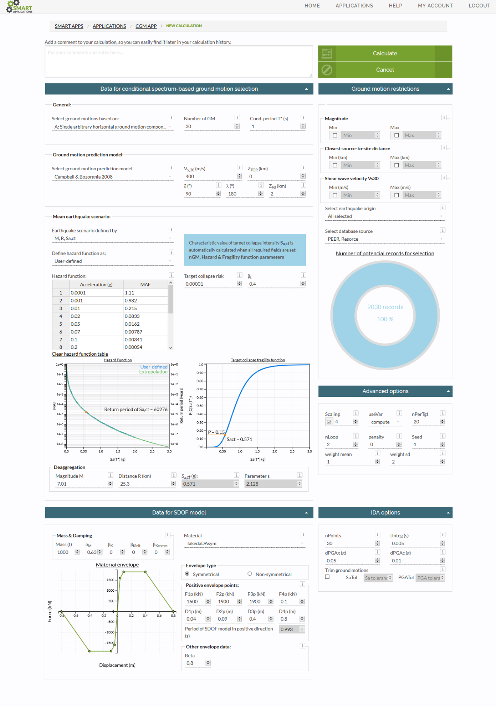
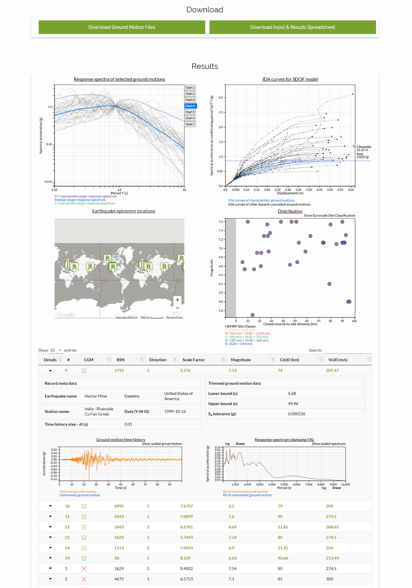
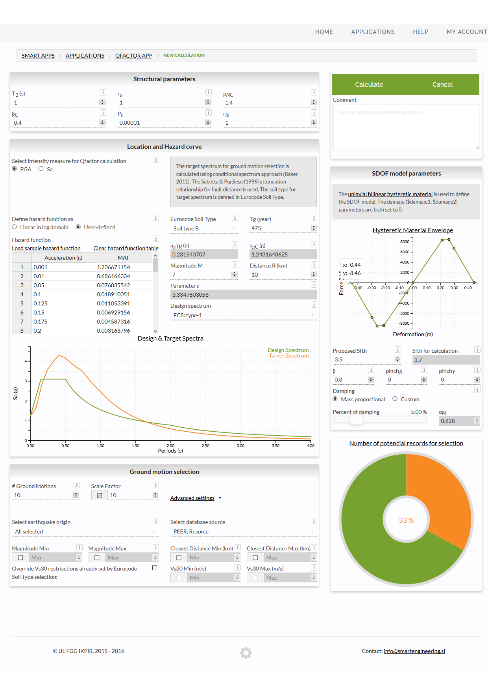
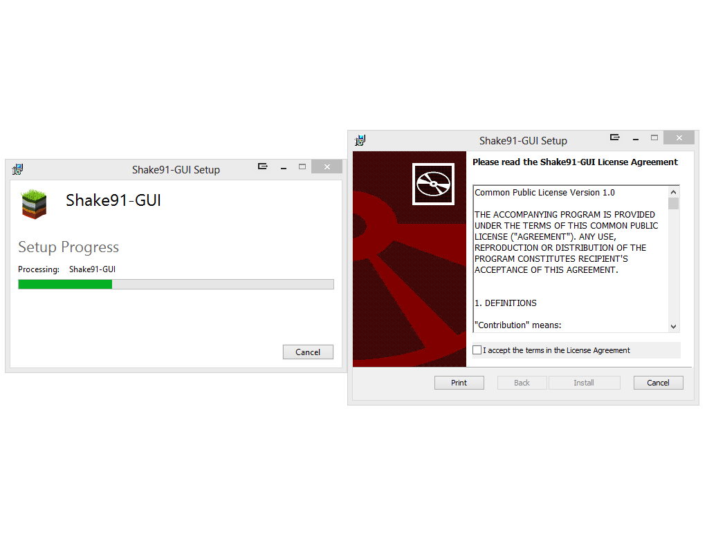
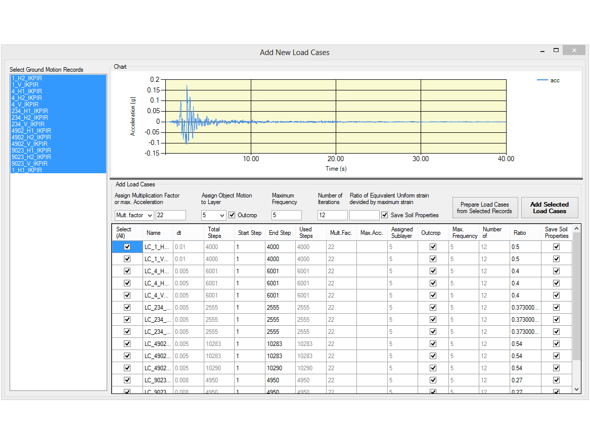

Faculty of Civil and Geodetic Engineering
University of Ljubljana (2014)
About:
From 2014 I work at Chair of Structural and Earthquake Engineering, Faculty of Civil and Geodetic Engineering, University of Ljubljana. My work revolves around database & software devolopment to provide new tools for complex and time consuming analyses.
Quick overview:
IKPIR Strong Motion Database
IKPIR database contains 9188 ground motion records from 39 countries. Each record consists of 3 recorded ground motions (2 horizontal & 1 vertical component). For each component acceleration spectrum with 5% applied damping was calculated, which are also stored in a database. Additionally there is a broad range of meta-data available for each record, ranging from earthquake associated data to data associated with recording location site.
Strong motion records were gethered from two sources:
- PEER ground motion database: http://ngawest2.berkeley.edu/
- RESORCE, reference database for seismic ground-motion prediction in Europe: http://www.resorce-portal.eu/
IKPIR database is designed in a way that alows independent queries from primary sources or queries from both, where possible duplicates are excluded.
CGM application (beta)
Web application for selection of so called characteristic ground motions proposed by 3R method (M. Dolšek, M. Brozovič). It adopts 4 tier system architecture:
- Client tier - provides user interface and runs in clients' browser (HTML5, CSS3 & D3.js)
- Web tier - handles user requests and provides cross tier communication (PHP)
- Application tier - runs computational demanding tasks which are managed with HTCondor. (runs custom software devoleped in C, Tcl and OpenSees)
- Database tier - application is backed with IKPIR database that contains around 18.000 horizontal ground motion components.
- Application: cgm.smartengineering.si
- More: www.smartengineering.si/activities/cgm_app
-
Workflow example
-
Input for ground motion selection
-

Input for SDOF model
-
Results presented with geolocation informations
-
Incremental dynamic analysis results
-
Target, mean and selected spectra results along with standard deviations
-
Characteristic ground motion results
SMART applications
SMART applications webpage hosts several SeisMic Analysis and Risk Targeted web applications.
Current applicatoins:
-
CGM app
New CGM application will replace the old beta version, where some minor bugs were found. -
Qfactor app
Application is in phase of testing. Description and use cases are comming soon. -
IKPIR strong ground motion database app
Application provides a graphical user interface for searching through IKPIR strong ground motion database based on multiple ground motion criteria. It also provides plots, basic statistics and geolocations of ground motions and allows users to download selected records. -
IKPIR strong ground motion web API
Public web API was developed that allows users to search and access data from IKPIR strong ground motion database from other applications. User must obtain a private KEY that allows data access. For the time being, user should provide a reason to use this data and obtain a key upon our approval of the request. We will also provide a MATLAB library, that allows remote connection with IKPIR strong ground motion database.
- Link: apps.smartengineering.si
-

SMART applications home page
-

New CGM app input page
-

New CGM app results page
-

Qfactor app input page
-
Some Qfactor app results
-
Example of Qfactor web API (MATLAB)
-
IKPIR strong ground motion database app
Shake91-GUI
Shake91-GUI is a graphical user interface designed for Shake91 program, used for equivalent linear seismic response analysis of horizontally layered soil deposits.
Shake-GUI is written in C# (.NET). It enables quick soil profile and load case definitions. It enables multiple analyses with different loads for the same soil profile. Ground motion records can be imported localy from files or remotely from IKPIR Strong Motion Database. Original Fortran soure code of Shake91 was modified, so that now supports use of ground motion recordings with more than 8196 steps. Shake91-GUI also provides means to view and plot results and export data to Microsoft Excel.
-

Shake91_GUI install screen.
-

Main input page.
-
Import ground motions directly from IKPIR strong ground motion database.
-

Save ground motions in local library.
-

Creacte multiple loade cases at once.
-

Results: material and soil profile.
-
Results: motions in sublayers.
-

Results: soil factor and response spectra.
Other
- OpenSees development - reimplementation of elements and materials (some developed by Jaka Zevnik) in to dynamic libraries for Linux and Windows.
- Software for ground motion simulation - code refactoring of FORTRAN programs SIMQKE and Synth. This programs were written for Windows and DOS environment and are now modified so they run under Linux.
SMART ENGINEERING - Website for Seismic Analysis & Risk Targeted engineering.